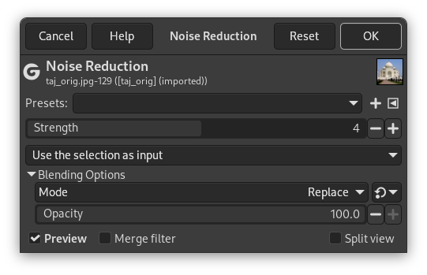
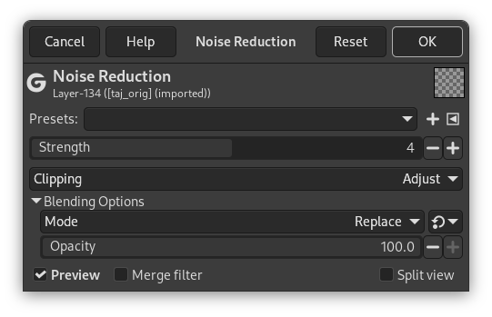

Most filters are GEGL filters. GEGL is the image processing library used by GIMP. These filters have several options in common, some of which are only shown under certain conditions.
Figura 17.1. Common Options of GEGL Filters

When a selection is active
(Note that Strength is not a common option but an option of the depicted Noise Reduction filter.)

When the active layer has an alpha channel and no selection is active
(Note that Strength is not a common option but an option of the depicted Noise Reduction filter.)
- Presets
-
Filter presets are similar to tool presets, in that you can save your favorite settings and recall them when needed. They consist of:
-
A drop-down list that shows the current preset and lets you choose a different one.
-
 An icon to save the current settings as a named preset.
An icon to save the current settings as a named preset.
-
 An icon that opens a menu with options to import presets from
a file, export the current presets to a file, and manage presets.
An icon that opens a menu with options to import presets from
a file, export the current presets to a file, and manage presets.
-
- Input Type
-
![[Nota]](images/note.png)
Nota The input type drop-down list is only visible when a selection is active.
-
Use the selection as input If this option is selected, the filter only uses pixels inside the selection as input for the filter.

-
Use the entire layer as input If this option is selected, the input of the filter is the entire layer. The output will only affect the selection. The layer outside the selection remains unchanged.

-
- Clipping
-
Nota The clipping drop-down list is only visible when the current layer has an alpha channel, and no selection is active.
This setting determines what to do when the result of this filter is larger than the original layer.
-
Adjust The layer will be automatically resized as necessary when the filter is applied. This is the default.
-
Clip The result will be clipped to the layer boundary.
-
- Blending Options
-
When you expand this option by clicking
 , you can choose the
blend Mode to be used when applying the filter,
and the Opacity.
These work the same as the
layer blending
options.
, you can choose the
blend Mode to be used when applying the filter,
and the Opacity.
These work the same as the
layer blending
options.
- Visualização
-
When this option is enabled (default), changes in the filter settings are directly displayed on canvas. They are not applied to the image until you click the button.
- Merge Filter
-
By default, GEGL filters are applied non-destructively as layer effects, which means they can still be changed at a later time. When you want to apply the filter immediately to the layer itself, you can enable this option.
See Using Layer Effects for more details.
This option is remembered, so you only need to change it once if you prefer to always use filters destructively.
- Split view
-
When this option is enabled, the view of the image is divided in two parts. On the left side it shows the effect of the filter applied, and on the right side it shows the image without filter.
Nota You can click-and-drag the line that divides the preview to move it, and Ctrl-click to make the line horizontal, or to switch it back to vertical.